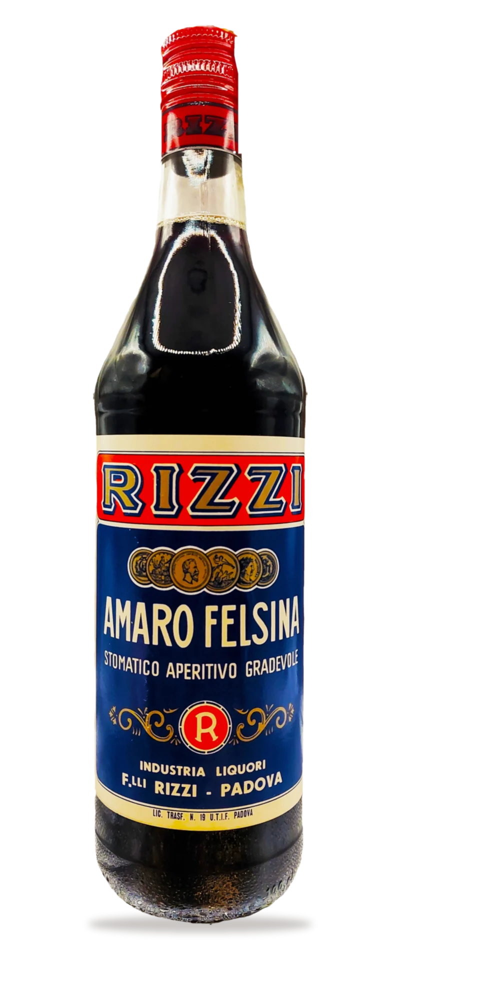
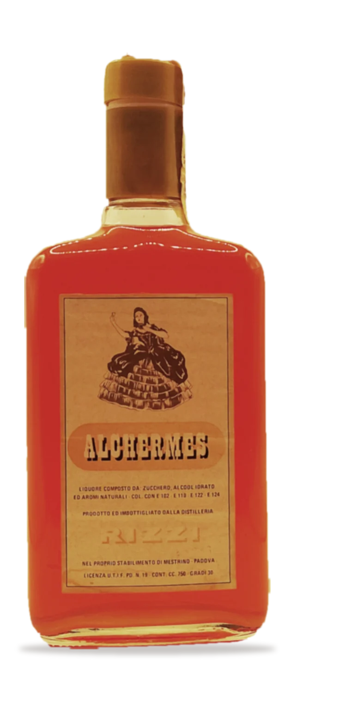
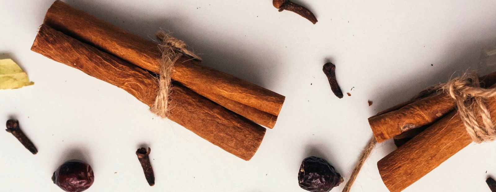
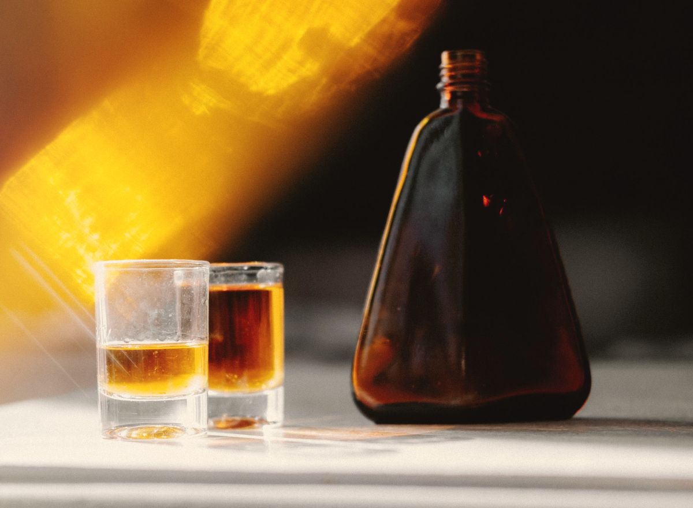

Liquori e amari dal 1926
Liquori, amari e aromi per la pasticceria a Mestrino, a due passi da Padova. Dal 2022 la distilleria è di Maddalena e Alessandro.
Amaro Felsina, 21°. Amaro alle erbe delicato, tra i più amati per il dopo pasto.


Oltre 40 aromi e ingredienti per la pasticceria
Una linea pensata per laboratori artigianali, professionisti e appassionati: creme, impasti, bagne e dessert.
Sciroppi di zucchero
20 gusti, da Arancia a Cola.
Aromi alcolici a 70°
Da Alchermes a King George.
Creme e vini
Marsala fine ambra secco DOP 17,5°, Cremovo e Ovorizzi 18°.
Vodka 70° per uso professionale: tanica da 5, 10, 20 e 30 L, fusto da 50 e 225 L.

Facciamo tutto noi, dall'inizio alla fine
Infusi, alcolati e sciroppi nascono nel laboratorio di via Negri, a Mestrino, seguendo ancora le ricette e le procedure scritte dai fondatori. Gli strumenti del fondatore e alcuni ricettari originali sono in vetrina, nello spaccio.
Dal 14 dicembre 2022, quando Maddalena e Alessandro hanno preso in mano la distilleria, sono uscite 16.540 bottiglie.
La distilleria compie cento anni
Nello stesso giorno festeggiamo i quattro anni dall'inizio della nostra attività. Rivivremo la storia dell'azienda con una mostra fotografica, ti faremo assaggiare liquori fatti con le ricette più antiche e potrai visitare la distilleria.
Ricevi l'invito per email- 1926I fratelli Carlo e Ferruccio Rizzi iniziano a produrre liquori.
- 1945Acquistano il marchio Genzial e prendono nel logo il leone veneziano con la scritta «casa fondata nel 1850».
- 2022Il 14 dicembre la distilleria passa a Maddalena e Alessandro.
- 2024Il 29 settembre apre lo spaccio aziendale, in via Negri.
Dal nostro laboratorio al tuo bicchiere, senza tappe inutili
Via G. Negri 7, 35035 Mestrino (PD)
Apri la mappa
Ufficio dal lunedì al venerdì, 9:00-12:30 e 13:30-17:00.
Spaccio: chiamaci per sapere quando passare.
